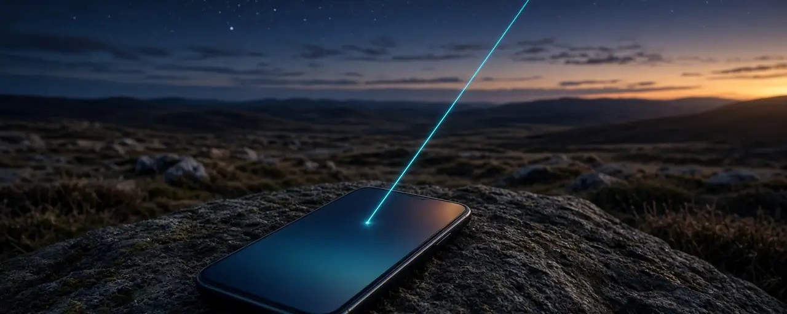

Why Starship is a telco story
Launch cadence and next-gen sats decide when phone-to-satellite coverage goes continuous.
The race to your phone
Here’s who’s live, who’s testing, and what it really does.
Check your phoneGet Signal free
Services and countries: tracker, . Satellites: launch tracker, (AST); others .
It already talks to the sky, just not to space. Every call, text and scroll goes to a mast a few kilometres away.
Walk far enough from the masts, onto a hill, a boat or a rural road, and the signal has nowhere to go.
Satellites in low orbit now act like masts in the sky, using the same mobile spectrum, so ordinary phones can connect. 688 phone-capable satellites are up today: 636 Starlink Direct to Cell, 12 AST SpaceMobile, 32 Globalstar (iPhone), 8 Lynk / Elveo. Which one would catch yours? Find out next.
Find yours · 688 phone satellites
Every glowing dot is a real satellite that can reach an ordinary phone, flying at its true height. Pick your country, network and phone.
Heights to scale with the Earth; positions are illustrative, not live tracking. Counts: (AST); others (sources). Drag to spin.
One dot per phone-capable satellite, month by month since 31 Dec 2023, then the partner networks in our tracker. Drag the rewind bar through 18 sourced milestones from 2020 on. Amazon Leo (428) isn’t shown: it serves dishes, not phones.
Starlink Direct to Cell leads on live services. Ranked by live services, then countries, from our tracker (20 Nov 2026). Skylo is second because it has two live tracker rows (one covers 41 countries via partners); it uses partners’ satellites, not its own.
22 live services in 19 countries, and 688 satellites overhead. Is your phone one of them? Services and countries: tracker, . Satellites: launch tracker, (AST); others .
Get Signal: the direct-to-cell story, explained by a 13-year GSM insider.
Get Signal freeFree, weekly. Opens beehiiv’s sign-up page. Privacy.
Dashboard · real data, sources linked
Services and countries: tracker, . Satellites: launch tracker, (AST); others .
Live services
22
of 36 tracked deals: 10 trial, 4 announced
Source: tracker · checked
Countries with live service
19
plus Skylo in 41 countries via partners
Source: tracker · checked
Trials running
10
2 added on 20 Nov 2026, 3 new live
Source: tracker · checked
Phone-capable satellites
688
in orbit, by month since 31 Dec 2023
Sources: launch tracker · (AST); others
Next launch Other
T− --d --h --m --s
Next phone-satellite launch: Globalstar 2-R Mission 2 (x 9) · December 2026 · date not set
| Rank# | Provider | Tracker status | Countries live | Satellites |
|---|---|---|---|---|
| 1 | Starlink Direct to Cell | 20 live5 trial1 announced | 18 | 636 |
| 2 | Skylo | 2 live | 1 +41 via partners | No own satellites |
| 3 | AST SpaceMobile | 5 trial2 announced | 0 | 12 |
| 4 | Lynk / Elveo | 1 announced | 0 | 8 |
| 5 | Globalstar (Apple) | iPhone features | n/a | 32 |
Ranked by live services, then countries. Tracker 20 Nov 2026 · satellites (AST); others , sources.
Why is Skylo No. 2? The ranking counts live services first, and Skylo has two live tracker rows (one covers 41 countries through partners). It doesn’t own satellites: it uses partners’ geostationary ones.
Heights to scale. Skylo uses partners’ geostationary satellites, far above this chart.
Next: SFR 2G, France · 1–15 December 2026 (remainder of mainland France; large cities were due 16–30 November 2026) · source
T− --d --h --m --s
Official operator or regulator dates only · checked 26 November 2026
Latest from Signal · #005 · 20 November 2026
Get Signal freeAll past issues
New milestones and dashboard changes land in Signal first.

Launch cadence and next-gen sats decide when phone-to-satellite coverage goes continuous.
What each option does, what it costs UK travellers and where it works.
Real-world D2D connections, who leads, and why Europe is still quiet.
Who's switched off, who's next, and why 2G is so hard to kill.
Signal · free weekly briefing
One email a week on direct-to-cell, mobile networks and what it means for you, from a mobile network insider with over 13 years in GSM.
Recent issues
Get Signal free Read past issues
Free, one email a week. Opens beehiiv’s sign-up page; your email is used only to send Signal. Unsubscribe any time. Privacy notice.
Who’s live, who’s trialling and who’s announced, country by country, with sources. Filter by status, provider and region, or download the CSV.
Cell towers in orbit, Doppler shift and why it's texts first.
An MVNO insider's take on wholesale, SMS platforms and pricing.
Ofcom's rules, the 1800 MHz spectrum and the £3 add-on, explained.
What the US tells us about how much people will actually use it.
VMO2 picked Starlink. VodafoneThree chose AST SpaceMobile.
Play
Deploy direct-to-cell satellites into orbit. A 75-second browser game: hit the slots before time runs out.

Explainer · new
Ride a phone call from a mobile in Warminster to a hiker with no mast, via satellite, then on to the bill. Fourteen animated chapters, in plain English.
Explainer
Follow one text from a hillside with no signal, up to a satellite, through the mobile network and on to the person you’re texting. Six short animated scenes.